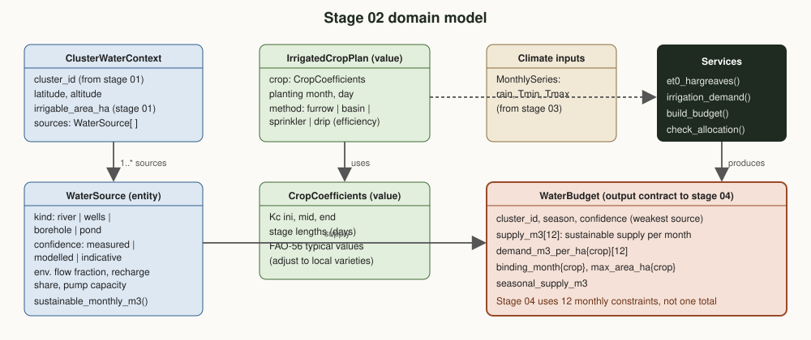

09. Harvest & Post-harvest Management
The season's work is won or lost in a few weeks. Stage 09 schedules scarce threshers and crews so plots are harvested before losses climb, accounts for every kilogram lost, dries and grades the grain, and forms traceable lots that link each bag back to its plots.
Position in the chain
This stage
Harvest scheduling, loss accounting, drying, grading and lot formation.
Why this stage matters
Think of an airport with few runways (threshers) and many planes (plots) whose fuel is running low (maturity windows closing). A good controller lands the plane with the least fuel left first, not the one that called in first. That simple rule, earliest deadline first, cuts field losses without buying a single extra machine.
Losses are lost income
Grain shattered in the field, spilled at threshing or spoiled in storage was already paid for with seed, fertilizer and labour.
Quality is price
Moisture and foreign matter decide the grade, and the grade decides the price a buyer pays.
Traceability builds trust
When every lot lists its plots, payments can flow back to the right households and buyers can trace quality issues.
Key questions
- In what order should plots be harvested with the machines and crews available?
- Where are kilograms lost, and how much does each step cost?
- Which lots meet which grade, and how can more grain reach the top grade?
- Which plots does each lot come from?
Domain model
Maturity windows (from stage 08) and resources feed the harvest service. Its main output is the HarvestLot, the traceable unit that storage, transport and settlement all refer to.

| Term | Kind | Meaning |
|---|---|---|
| MaturityWindow | Input | When a plot is ready and when losses start to climb. |
| HarvestResource | Entity | A thresher, combine or crew with daily capacity and working days. |
| HarvestJob | Value object | Plot, resource, day and days late. |
| LossRecord | Value object | Kilograms lost per step: field, threshing, drying, handling. |
| GradeSpec | Value object | Buyer grade limits on moisture and foreign matter. |
| HarvestLot | Entity (output) | Lot ID with its plots, weight, moisture, foreign matter and grade. |
Methods
Scheduling: earliest deadline first
Plots are taken in order of their window's last day and placed on the first resource-day with capacity left. Large plots span several partial days. First-come scheduling is kept as the comparison baseline.
Losses
Field loss = 3% base + 1.2% for each day past the window (teff shatters easily), capped at 35%. Threshing 2%, handling 1%. Drying removes water: weight after drying = weight × (100 − initial moisture) ÷ (100 − target moisture), so dry matter is conserved.
Grading
Each lot gets the first grade whose limits it meets: grade 1 up to 12.5% moisture and 1% foreign matter, grade 2 up to 13.5% and 2%, grade 3 up to 14.5% and 3%. Limits come from the buyer contract (stage 05).
Traceable lots
Harvests are grouped by cluster, product and week, optionally kept apart by handling (tarpaulin versus bare-ground threshing), and filled up to 10 t. Each lot keeps the list of its plots for settlement (stage 12).
Amhara-specific considerations
Teff shatters
Teff grain is tiny and shatters when over-ripe, so harvest timing matters more than for most cereals.
Threshing practice
Much grain is threshed by animals trampling on prepared ground; tarpaulins and small threshers reduce soil and stones in the grain.
Late rains at harvest
Showers in October and November can wet stacked crops, raising moisture and mould risk; drying capacity matters.
Labour peaks
Harvest overlaps with other crops and social events; crews and machine services must be booked ahead.
Shared machines
Threshers are often owned by cooperatives or service providers; a shared schedule avoids idle days and queues.
Quality premiums
Buyers such as flour mills and exporters pay for clean, dry grain; the premium decides whether better practices pay.
Data sources
| Layer | Source | Resolution | Used for | Access |
|---|---|---|---|---|
| Maturity and volumes | Stage 08 forecasts and senescence | plot | Windows and expected tonnes | Project |
| Resources | Cooperatives, service providers, crews | per resource | Capacity | Project |
| Moisture and quality | Moisture meters and sieves at collection points | lot | Grading | Project |
| Weights | Scales at threshing floors and collection centres | lot | Loss accounting | Project |
| Grade specifications | Buyer contracts (05), national standards | product | Grade limits | Public / contract |
Demo: teff harvest in cluster A
180 synthetic teff plots (105 ha) ripening over three weeks, two threshers and one crew (5 ha a day in total), no work on Sundays. Generated windows, yields and moisture.
Post-harvest weight change by step, two scheduling rules
Same 180 plots and 5 ha/day of threshing capacity. First-come scheduling leaves 19 plots past their window; earliest-deadline-first leaves 0.
Show as table
| Loss step | First come, first served | Earliest deadline first |
|---|---|---|
| Field (late harvest) | 7.89 | 6.05 |
| Threshing | 3.87 | 3.91 |
| Drying (water removed) | 5.65 | 5.62 |
| Handling | 1.84 | 1.86 |
Values (t).
Tonnes by grade under three practices
Value index with ±8% grade premiums: mixed 186.3, segregated 186.6, all tarpaulins 197.3 (grade-2 tonne equivalents).
Show as table
| Practice | Grade 1 | Grade 2 | Grade 3 |
|---|---|---|---|
| Mixed lots | 37.2 | 137.5 | 9.4 |
| Segregated by floor | 84.5 | 45.9 | 53.7 |
| All on tarpaulins | 165.0 | 19.1 | 0.0 |
Values (t).
What the demo shows
- Earliest deadline first harvests every plot inside its window; first come, first served leaves 19 plots late and delivers 182.3 t instead of 184.1 t.
- Segregating lots by threshing floor more than doubles grade 1 tonnes, but also exposes the rest as grade 3. With ±8% premiums it is roughly value-neutral.
- Tarpaulins for everyone lift almost all grain to grade 1, worth about 6% more: the investment worth making.
Traceable lots (first 8)
| Lot | kg | Plots | Moist. % | Foreign % | Grade |
|---|---|---|---|---|---|
| LOT-A-TEFF-2026-W43-001 | 9,468 | 8 | 12.4 | 1.86 | grade 2 |
| LOT-A-TEFF-2026-W43-002 | 7,923 | 9 | 12.5 | 1.85 | grade 2 |
| LOT-A-TEFF-2026-W43-003 | 9,436 | 9 | 12.5 | 0.57 | grade 1 |
| LOT-A-TEFF-2026-W43-004 | 9,462 | 8 | 12.5 | 0.64 | grade 1 |
| LOT-A-TEFF-2026-W43-005 | 6,980 | 8 | 12.5 | 0.66 | grade 1 |
| LOT-A-TEFF-2026-W44-006 | 9,864 | 10 | 12.5 | 2.15 | grade 3 |
| LOT-A-TEFF-2026-W44-007 | 9,023 | 10 | 12.5 | 1.75 | grade 2 |
| LOT-A-TEFF-2026-W44-008 | 9,685 | 8 | 12.5 | 0.57 | grade 2 |
Outputs and the contract with other stages
Harvest schedule
Plot, resource and day, shared with households, cooperatives and service providers.
Traceable lots
Lot ID with plots, weight, moisture, foreign matter and grade, for stages 10, 11 and 12.
Loss accounts
Kilograms lost per step and plot, to target training and equipment.
Example record sent downstream (synthetic):
{
"lot_id": "LOT-A-TEFF-2026-W43-001",
"weight_kg": 9468,
"plots": 8,
"moisture": 12.4,
"foreign": 1.86,
"grade": "grade 2",
"week": "2026-W43",
"plot_ids": [
"P-024",
"P-031",
"P-035",
"P-041",
"..."
]
}Validation and indicators
How results are checked
- Weights checked at threshing floor, collection point and buyer (stage 12)
- Moisture meters calibrated each season; spot checks on lots
- Field loss estimates checked with sample measurements on early and late plots
- Schedules compared with actual harvest dates
Indicators (KPIs)
- Post-harvest loss (%) by step
- Share of plots harvested inside their window
- Share of tonnes at grade 1
- Share of lots fully traceable to plots
Roadmap
Methodology v0.1
- EDF scheduling and loss model
- Drying, grading, traceable lots
- Demo and tests
- Status: done
Equipment
- Inventory threshers and crews
- Tarpaulin and moisture meter programme
Operations
- Shared harvest calendar app for cooperatives
- Lot labels with QR codes
Learning
- Measured losses per step
- Premiums by grade from stage 12
Code on this branch
src/harvest/domain.py domain model (windows, resources, jobs, grades, lots, losses)
src/harvest/operations.py EDF/FIFO scheduling, field loss, drying, grading, lot formation
src/demo.py cluster A teff harvest demo (writes assets/demo-harvest.json)
tests/test_harvest.py unit testsgit switch stage/09-harvest-postharvest
python3 src/demo.py
python3 tests/test_harvest.py